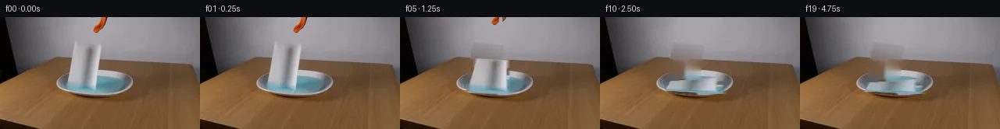

![首帧]()

Round 00
2026-11-05T08:25:28.063442+00:00像素候选变化代码 +253/−0inspection 更新
pixels 208a4038aaf85b6a · code 763c0f0ad727d916
查看本轮 generate.py 真实 diff
--- previous/generate.py +++ current/generate.py @@ -0,0 +1,253 @@ +from pathlib import Path + +import cv2 +import numpy as np +from PIL import Image, ImageDraw + +from artifact_io import save + + +ROOT = Path(__file__).resolve().parent +W, H = 256, 144 + + +def feather(mask: np.ndarray, sigma: float = 0.8) -> np.ndarray: + """Return a softly antialiased float alpha from an 8-bit mask.""" + a = cv2.GaussianBlur(mask.astype(np.float32) / 255.0, (0, 0), sigma) + return np.clip(a, 0.0, 1.0) + + +def composite(dst: np.ndarray, src: np.ndarray, alpha: np.ndarray) -> np.ndarray: + a = alpha[..., None] + return np.clip(dst.astype(np.float32) * (1.0 - a) + src.astype(np.float32) * a, 0, 255) + + +def translated_layer(src: np.ndarray, alpha: np.ndarray, dx: float, dy: float): + matrix = np.float32([[1, 0, dx], [0, 1, dy]]) + layer = cv2.warpAffine( + src, matrix, (W, H), flags=cv2.INTER_LINEAR, borderMode=cv2.BORDER_CONSTANT + ) + matte = cv2.warpAffine( + alpha, matrix, (W, H), flags=cv2.INTER_LINEAR, borderMode=cv2.BORDER_CONSTANT + ) + return layer, matte + + +def make_revealed_background(source: np.ndarray, paper_binary: np.ndarray, tool_binary: np.ndarray): + """Inpaint only the areas revealed when the two foreground objects move.""" + hole = np.maximum(paper_binary, tool_binary) + hole = cv2.dilate(hole, np.ones((3, 3), np.uint8), iterations=1) + background = cv2.inpaint(source, hole, 5, cv2.INPAINT_TELEA) + + # The upper paper area covers a smooth wall. A low-order local surface is more + # stable than propagating edge texture through that broad vertical opening. + yy, xx = np.mgrid[0:H, 0:W] + fit_zone = (yy >= 26) & (yy <= 55) & (xx >= 72) & (xx <= 148) & (hole == 0) + design = np.stack( + [np.ones(fit_zone.sum()), xx[fit_zone], yy[fit_zone], xx[fit_zone] * yy[fit_zone]], + axis=1, + ) + wall_hole = (yy >= 26) & (yy <= 53) & (paper_binary > 0) + target = np.stack( + [ + np.ones(wall_hole.sum()), + xx[wall_hole], + yy[wall_hole], + xx[wall_hole] * yy[wall_hole], + ], + axis=1, + ) + for channel in range(3): + coef, *_ = np.linalg.lstsq(design, source[..., channel][fit_zone], rcond=None) + prediction = np.clip(target @ coef, 0, 255) + background[..., channel][wall_hole] = prediction.astype(np.uint8) + + # Replace the small top-edge tool opening with horizontal interpolation of + # the nearby wall, avoiding any upward-edge extrapolation. + for y in range(0, 25): + xs = np.where(tool_binary[y] > 0)[0] + if not len(xs): + continue + lo, hi = max(0, int(xs.min()) - 2), min(W - 1, int(xs.max()) + 2) + left = source[y, max(0, lo - 3)].astype(np.float32) + right = source[y, min(W - 1, hi + 3)].astype(np.float32) + for x in range(lo, hi + 1): + f = (x - lo) / max(1, hi - lo) + background[y, x] = np.clip(left * (1 - f) + right * f, 0, 255) + + return background + + +def add_ripples(frame: np.ndarray, t: int) -> np.ndarray: + if not 7 <= t <= 16: + return frame + age = t - 7 + strength = max(0.0, 1.0 - age / 10.0) + center = (121, 88) + rx = int(17 + age * 3.1) … diff truncated; 166 more lines …